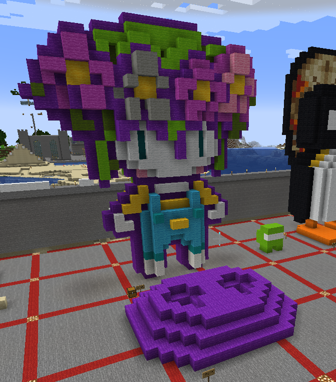

Minecraft 3D Print
For my sculpture project I wanted to pay tribute to one of my favorite games. The cultural significance of this character is that it's from an RPG called Omori which has a large and creative community. To make it, I first found the 2D version of the character and made it flat, then built on each side of it to create dimension. After I did, I realized I wanted to make a base so that when it's 3D printed, it can be attached and stay put as a little statue. Other than that, I added a functional keychain loop at the top.


Next, these are models taken from Minecraft and sent into the real world via 3D printing. The first image between the two was upright and therefore used way too much scaffolding which made it difficult to see the details of the figure. In the second, I printed it on its back instead which allowed me to completely build up from a base rather than trying to create overhangs and other complicated structures. This way, I was able to get all of the detail possible.